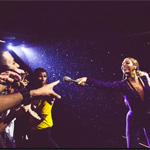

| Home | Destiny's Child | Sasha Fierce | Mrs. Carter |
|
Mrs.Carter
|
Mrs. Carter World Tour The Mrs. Carter Show World Tour was the fifth concert tour by American singer Beyoncé. Announced in February 2013 with initial dates in Europe and North America, the tour contained six legs and 132 shows. It began in Belgrade, Serbia on April 15, 2013, and concluded in Lisbon, Portugal on March 27, 2014. Its title is a reference to her marriage with American rapper Shawn "Jay-Z" Carter, who made multiple guest appearances throughout the tour. The tour featured royal themes with the singer emulating different queens through her fashion for which she collaborated with numerous designers and fashion houses. The set list of the shows in 2013 included songs from all four studio albums of Beyoncé's solo career. After the release of her eponymous fifth studio album, the 2014 shows were changed to incorporate tracks from the album. The tour was lauded by music critics who praised Beyoncé for her energetic performances, dancing and vocal abilities. Following the announcement of the tour, all the tickets made available for the shows sold out, which prompted more dates to be added to the itinerary. The tour grossed $188.6 million in 2013 and the 2014 shows grossed $41.1 million, bringing the tour's total gross revenue to $229.7 million. This made The Mrs. Carter Show World Tour the highest grossing female and solo tour of 2013, Beyoncé's highest grossing tour to date and one of the highest grossing tours of the decade. Performances of numerous songs from the tour were broadcast and behind-the-scenes footage was released. During a press conference for Super Bowl XLVII on January 31, 2013, Beyoncé revealed that she would make an announcement after her performance at the halftime show and added that "fans should just stay tuned to see". Beyoncé announced the tour and its name after her performance the Super Bowl XLVII halftime show on February 3. The tour's title refers to her marriage with Shawn 'Jay-Z' Carter. However, the official poster of the tour with the name written on it was leaked on the ticket's website Live Nation prior to the official announcement. It shows Beyoncé wearing a Victorian golden royal top and a crown, referencing Queen Elizabeth I. Rosie Swash of The Guardian described it as a "visual stamp of authority". Along with the tour's name, initial dates in Europe and North America were announced, and later more were added in Latin America, Australia, and New Zealand. Following the announcement of the tour's title, Beyoncé was criticized by several critics and feminists alike for entitling it after her husband's name as she has been regarded as a feminist. Questions were raised about how Beyoncé agreed to be known as a bride of another celebrity person. During an interview with Vogue, Beyoncé described herself as a "modern-day feminist" and further spoke about her decision to reference her husband's name: "I feel like Mrs. Carter is who I am, but more bold and more fearless than I've ever been..... It comes from knowing my purpose and really meeting myself once I saw my child. I was like, 'OK, this is what you were born to do'. The purpose of my body became completely different.] After the second European leg was announced on December 11, 2013, a new poster was revealed and used for the promotion of all the newly added shows. |